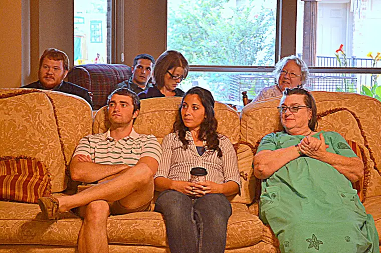
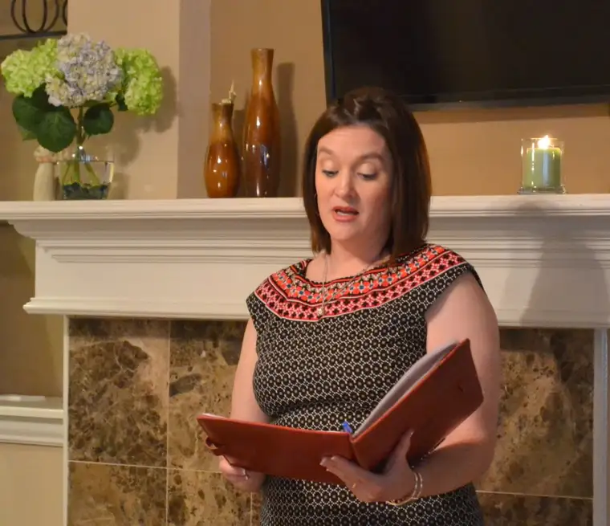
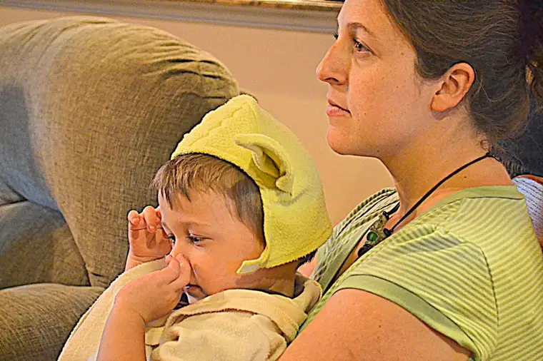
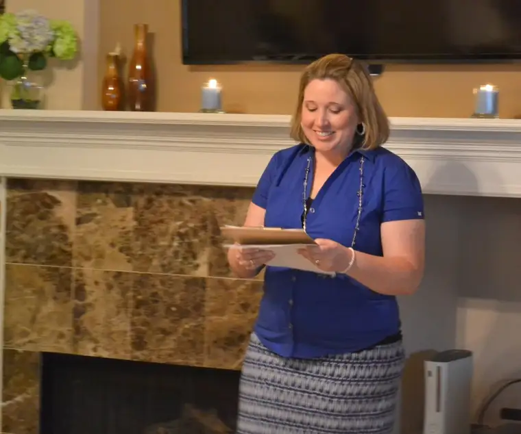
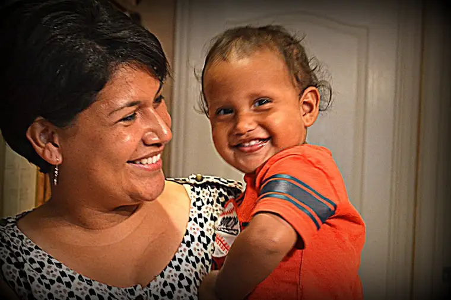
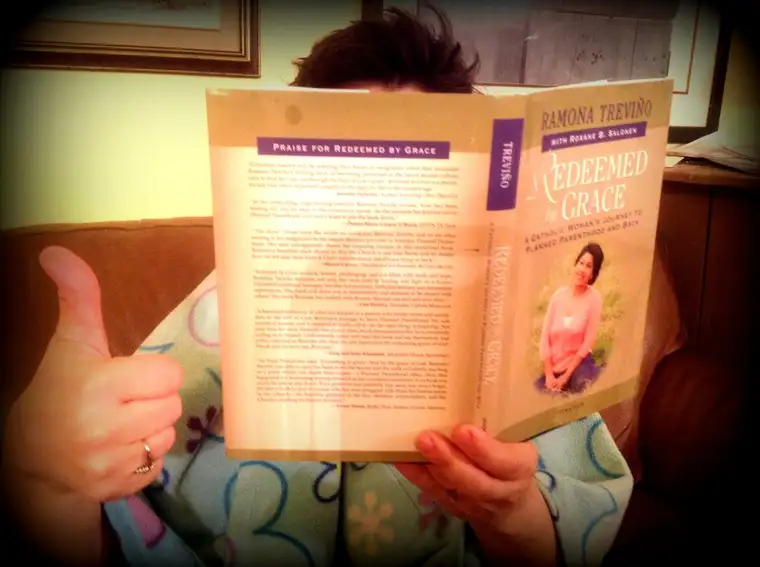

Today’s post constitutes day one of a “blog train” that will take us through “Redeemed by Grace” from eight different perspectives in eight days. Ramona Trevino, whose story is told through this book, will be among those who will share their thoughts. I will post a link each day of the train so you can easily hop aboard and be part of this continuing launch effort.
In the spring of 2012, I was approached with an incredible proposition: A chance to write the story of Ramona Trevino’s conversion from Planned Parenthood manager to pro-life advocate and speaker.
Talk about a rush! I knew of Ramona and how she’d left her place of employment, and how her former facility in Sherman, Texas, had closed down not long after her exit — and that she’d spoken at the closing. I celebrated over that closing with the rest of the pro-life community. So when I was offered this opportunity, my heart couldn’t help but say, “Yes, yes, Lord!”
I still remember where I was at when the offer first came before me and some of the thoughts buzzing through my brain. But included in the mix were all of the roadblocks one’s mind throws out when being faced with a big decision. Would my current career transition allow me to take on another project? How could I carve out time to work on something so big? Would Ramona even want me to write her story?
Inevitably, I decided to say yes should Ramona deem me a suitable collaborator. And from the point she added her “yes” to mine, it’s been an incredible journey of not only discovering the depth of this story and what it means for the world, but also the depth of Ramona’s beautiful soul, and God’s love for both of us.
I realize that for most, it’s the story that matters, and not what went on behind the scenes. But I hope that in some measure, learning a bit of what we went through in bringing this story to the world will give its readers an even bigger appreciation for what resulted.
What we tried to bring forward is the story of a single soul in all of its brokenness and beauty. We wanted the story to have something in it that pretty much everyone could relate to on some level. And above all, Ramona wanted the story to not just be about the pro-life vision, but a conduit for bringing souls back to God and his church.
What you won’t read about in the book are the squeals that erupted the day we learned that we’d been offered a contract by Ignatius. I had to leave the store where I was shopping with my teen daughter when the email from Mark Brumley came in because I couldn’t contain myself.
Ramona and I had jumped into the project headlong without first securing a publisher. That’s how much we believed in the message. And we trusted that if God wanted it out there as much as we thought He might, it would happen somehow. The swift contract offer seemed to us proof that God’s will had been infused in our efforts, and this filled both of us with an incredible joy and excitement.
But these details are invisible from the outside. Likewise, you won’t read in “Redeemed” about our chance to attend a conference in New Jersey, where we would work together into the wee hours on the finishing touches of the book, and jump on the bed, whooping and hollering, in a victory celebration of all that we’d accomplished together.
The book will not make plain how a pocket of supporters in Texas had come together to pray for us and offer financial resources so we could bring the project to completion prior to securing a publisher…
{kind=link}

…Or about the gathering there where we shared with them the first chapter, and their generous, encouraging reactions.
{kind=link}

{kind=link}


You certainly won’t detect from reading the book how many texts and phone calls Ramona and I initiated throughout the writing process and into the exciting days of the release, along with our mutual friend, Lauren Muzyka, who had been instrumental from the beginning as our number-one cheerleader and comrade (Lauren also writes the foreword to the book).
{kind=link}

And you won’t see what I’ve seen as I’ve walked with Ramona, through details of the book, yes, but also through our lives as fellow mothers with all of the accompanying joys and tribulations.
{kind=link}

You won’t be able to tell in the chapters just how many times we sought out one another for prayer and support, how often we laughed and cried over the phone, how many times we gave each other a thumbs-up for making it through another hurdle.
The real back story is a beautiful one, and one that only God himself could have fashioned. We could not write about all of that, because that’s not what the story is about and it’s not the main thing God wanted us to bring you as readers. But I want you to know, at the very least, that while Ramona and I — with Lauren close by — were working on this story, God was weaving together a beautiful friendship, and we feel that somehow this back story is something of an offering to you. Love brought this story together — we prayed for each of you many times as we were preparing it for publication — and we hope you will feel that above all else as you are reading each chapter.
Writing “Redeemed by Grace” has been an unexpected blessing in my life, and I hope this beautiful story that has resulted through God’s grace will reach you and transform you in some way, as we have been further transformed in the writing of it. The love embedded within is real and pure, and it’s meant ultimately for you because ultimately, it’s you God wants to reach through our humble offering.
Please, if you would, share with us how “Redeemed by Grace” has affected you. We will be blessed all over again to know of the souls touched by God through this story.
{kind=link}

If you haven’t yet read it, you can order your copy through Ignatius or Amazon, or your local book store. Find more about the project here.
With that, we’ll see you at tomorrow’s “car” here (April 23): http://www.